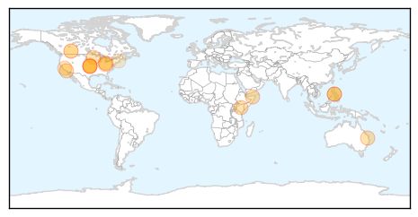

30 Day Trends
Web: 1 alerts, 0 warnings
Twitter: 0 alerts, 0 warnings
Top Articles:
- 0.978
- Pharmacists in Ohio can now administer measles, mumps, rubella vaccines - Aurora Advocate
- 0.975
- Rotavirus vaccines have saved nearly $1 billion
- 0.971
- Family Physicians Enlist in Fight Against Measles
- 0.964
- Measles outbreak blamed on vaccination gap
- 0.949
- How one unvaccinated child sparked Minnesota measles outbreak
- 0.947
- Where Measles Can Thrive
- 0.925
- Measles cluster emerges in Kansas City area
- 0.912
- Ohio pharmacists can start administering the MMR vaccine to adults
- 0.898
- Vaccinations Are The Best Defense Against Measles « CBS Minnesota
- 0.852
- KCBD NewsChannel 11 Lubbock
- 0.829
- Rotavirus vaccine keeping more kids out of the hospital
- 0.808
- Combo Vaccine Raises Risk of Fever-Related Seizures in Toddlers: Study
- 0.791
- University of Calgary study suggests combined vaccine increases risk of fever-induced seizures
- 0.714
- Combined vaccine doubles seizure risk in children
- 0.708
- Gov. Kasich issues executive order on vaccines
- 0.682
- Combined MMRV vaccine slightly increases kids' seizures risk: study
- 0.668
- Governor eases access to vaccines amid outbreaks
- 0.574
- Vaccine Hesitancy: When Fear Is More Powerful Than Facts
Top Tweets:
-
No tweets found for Jun 09, 2014
Web/News Articles

Tweets

Article Locations
Article Confidences